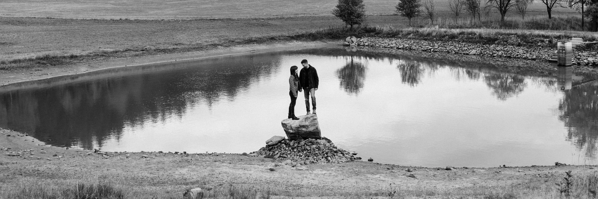
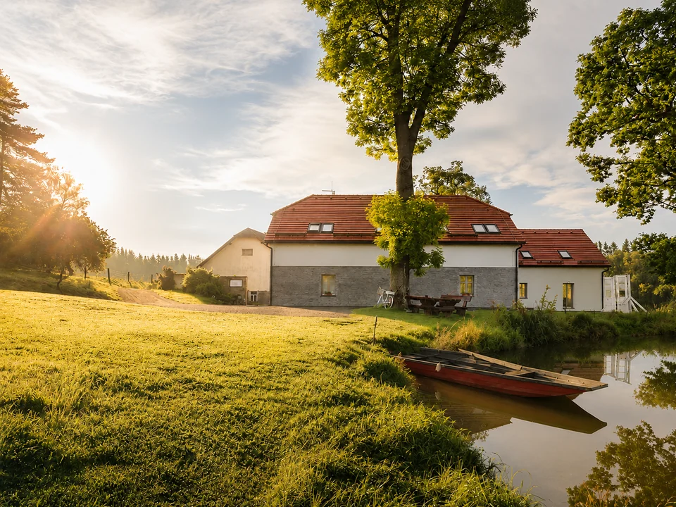
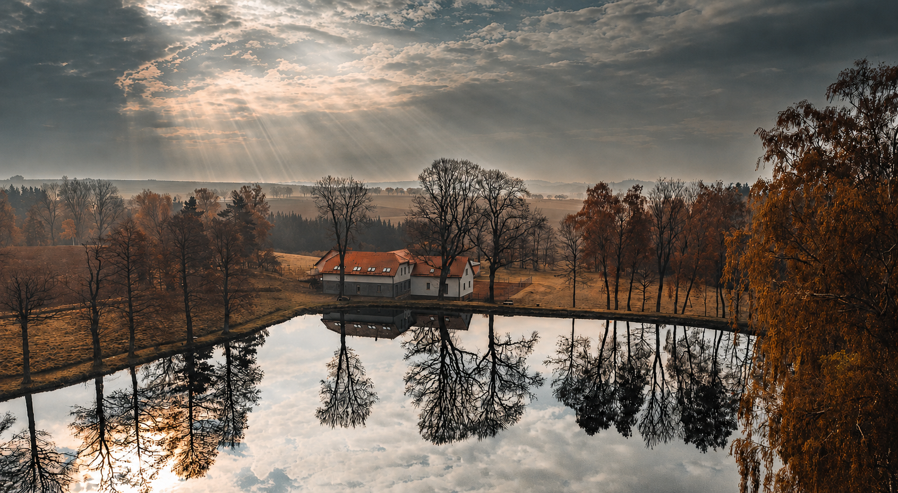

Bereme se. A rádi bychom ten den prožili s Vámi.
Program


Více fotek místa
Místo
Jitkovský mlýn
Starý mlýn u rybníka kousek za Chotěboří — louky, stromy a klid Vysočiny. Obřad bude venku, hostina uvnitř. Všechno na jednom místě.
- Adresa Jitkov 32, 583 01 Chotěboř
-
Příjezd
45 minut z Pardubic · 45 minut z Dlouhého
- Parkování Na místě, hned za mlýnem
Ubytování
-
Na mlýně
Tady bude místo pro rodinu
Fotky
-
V okolí
10 minut autem od mlýna vám zařídíme ubytování včetně dopravy do/z mlýna Penzion Račín →
Fotky
Dary
„Jó, vždyť víš, štěstí je krásná věc... štěstí je tak krásná a přepychová věc, ale prachy si za něj nekoupíš."
Co na sebe
Poprosíme Vás o společenský oděv. Pokud se budete chtít sladit do barev svatby a vyberete si obleček v níže uvedených barvách, budeme rádi. Pokud si ale vezmete svoje oblíbené šaty v jiné barvě, nevadí. Těšíme se na Vás, ne na Vaše oblečení.
Ponechte nám pro tento den prosím naši jedinečnost. Nevěsta bude v obvyklých bílých šatech, ženich v černém obleku s černým motýlkem.
- krémová
- písková
- karamel
- mocca
- hnědá
Dobré vědět
Můžeme vzít děti?
Vaše děti máme rádi stejně jako vás. Pokud je to ale ve vašich možnostech, budeme rádi, když jim pro tento den zajistíte hlídání.
Jak je to s ubytováním a dopravou?
Po příjezdu se ubytujete v penzionu Račín a zavoláte řidiči Michalovi, který vás odveze na mlýn. Večer vás zase bezpečně doveze zpátky k ubytování. Pokud budete chtít jet rovnou domů, odveze vás tam, kam budete potřebovat. Kontakt: řidič Michal tel. 728 444 333
Kde zaparkujeme?
Pokud se večer chystáte odjet domů vlastním autem, můžete zaparkovat přímo u mlýna.
Jak je to s placením ubytování?
Ubytování je na nás. Vy si s sebou vezměte jen dobrou náladu.
Co když mám ještě nějaké otázky?
Pokud vám něco není jasné nebo potřebujete s čímkoliv poradit, neváhejte se obrátit na některého z našich svědků.

Těšíme se na Vás
Martin & Michaela